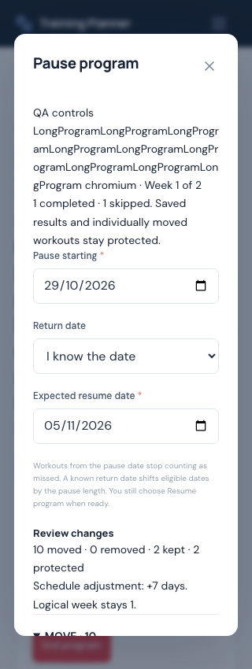
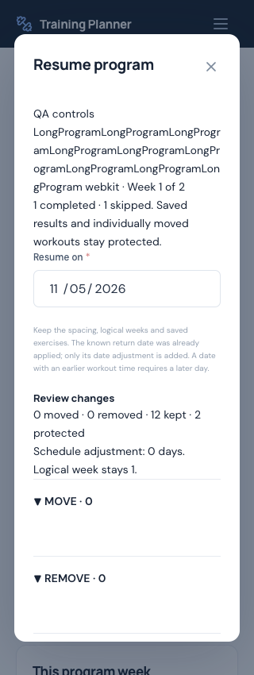
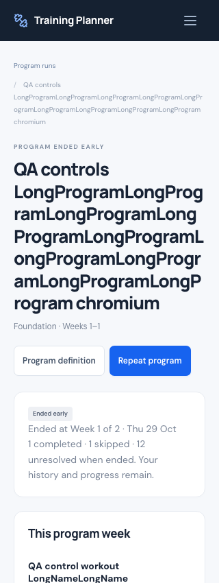
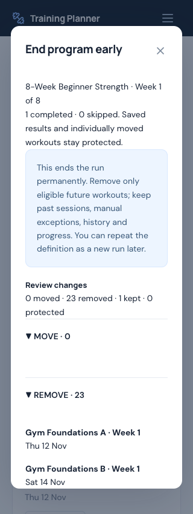

Mobile evidence
Disposable QA fixtures deliberately use long names to stress wrapping. The complete machine-readable verification summary accompanies this report.




1 / 45
Baseline version and commit
Accepted production baseline: v2.0.1, source
5751231d9ca43fbb8b062357aa1115e1aeb64ddf. Work began from clean main at 149ab21, which records its completed deployment verification. Baseline SQLite/MySQL suites each passed 478 tests / 10,265 assertions; JavaScript and the frontend build passed before implementation.2 / 45
Deployment state
Production remains v2.0.1. No Hostinger uploads, migrations, production QA accounts or other production writes were made during this update. Section 127 of the v2.1 brief explicitly holds deployment until a subsequent request to deploy.
3 / 45
Program Run statuses
Existing ProgramRun now supports Active, Paused, Completed and Ended Early. One additive migration adds nullable
paused_from, resume_on, ended_at, ended_position and schedule_shifts. No replacement models, extra status history system, new packages or new indexes.4 / 45
Pause architecture
ProgramControl operates on an authorized existing run and its persisted sessions. The controller validates the pause date, defaults the UI to today, rejects past dates and requires a signed preview plus confirmation. Future pause boundaries are supported: workouts before that boundary retain existing behavior. Active workouts block the operation.
5 / 45
Resume architecture
Resume changes Paused to Active and clears current pause fields. An indefinite pause anchors the first eligible remaining workout to the chosen start date. For a known return date, only the difference from that already-applied date is added; it is not shifted twice. Returning in the future is allowed; explicit resume is always required.
6 / 45
Pause schedule behavior
Known-date pause shifts eligible workouts by return date minus pause date. Indefinite pause leaves dates intact without inventing a return date. Neither operation replaces exercises, regenerates occurrences or changes the run definition snapshot. The preview lists MOVE, KEEP, REMOVE and PROTECTED groups before a write.
7 / 45
Missed workouts while paused
Unresolved workouts on or after the active pause boundary are excluded from program due/missed/adherence calculations. Earlier missed workouts remain visible and recoverable. Completing eligible workouts before a future pause boundary can still resolve the run normally. Elapsed calendar time alone never advances a program week.
8 / 45
Shift Remaining Schedule
The chosen-date option moves all eligible unresolved sessions by one uniform date offset, retaining spacing, logical order, times, week/block identity and occurrence keys. Destinations in the past or earlier today are rejected. Offset boundaries are retained only to make later explicit definition reconciliation respect the accepted schedule. Resume itself never imports a changed definition.
9 / 45
Manual exception protection
Individually moved or edited sessions stay PROTECTED. Completed, skipped, started and saved workout records never shift. Original dates and reasons appear in previews. A later bulk shift does not silently undo a manual Calendar exception.
10 / 45
Missed workout quick actions
Personal Program detail offers Reschedule and Mark skipped directly on missed rows, including expanded program weeks. Only eligible unsaved missed workouts offer Reschedule; protected saved history does not. Reschedule uses the existing ScheduleChangeModal, signed diff and single-occurrence endpoint. Skip uses the existing status transition and advances logical weeks under the original rules. Coaches are not given performance-status shortcuts.
11 / 45
End Program Early
An Active or Paused run can end only after reviewing removals and confirming. Remove eligible future unresolved generated sessions; keep completed/skipped records and protect past unresolved, saved and manually edited sessions. Active workouts block ending. Program definition, run, results, Progress, PRs and body-weight records remain.
12 / 45
Completed versus Ended
Completed retains the original completion semantics and celebration. Ended is final and has a separate ended timestamp, no completed timestamp, no celebration and no pause/resume/shift controls. The end snapshot freezes the logical position and summary as they stood before future rows were removed.
13 / 45
History preservation
Completed session records and structured actual sets remain readable after end. Historical status corrections preserve saved actuals without reopening the ended run. Retained unresolved ended workouts cannot start new workout logging. Repeat creates a separate run if the source definition still exists; orphan runs remain readable and controllable by their owner.
14 / 45
Dashboard integration
Personal and Coach upcoming/day counts exclude held planned workouts. Personal program cards include Paused separately with its pause date and a Resume program link. Calendar labels identify Paused and Ended Early sessions; held sessions cannot be dragged. Run history shows all four statuses, and coach run controls also respect assignment status.
15 / 45
Adherence
Due completed / all due training remains the formula. Future workouts and paused unresolved workouts are excluded; rest days remain excluded. Shifted dates determine current due status. Ended summary counters are frozen at end so deleting eligible future rows cannot inflate the completed ratio.
16 / 45
Logical Program Week
Current week still derives from the earliest unresolved required program week. Pausing or shifting does not change that identity. A partially completed week keeps its completed portion intact and moves only eligible unresolved work. Ended runs retain their stopping week.
17 / 45
Block identity
Run/session block metadata and saved prescriptions stay unchanged through controls. Resuming after an edited reusable definition uses the saved run data. The separate Review program changes flow still controls whether future definition edits are adopted, using run date offsets to preserve approved shifts.
18 / 45
Active Workout protection
All four bulk controls reject a run containing an active workout and direct the user to finish or discard it. Program workout starts and status mutations acquire the run lock before the session lock; this serializes them with controls and prevents a preview from overwriting a concurrent start or completion.
19 / 45
Snapshot and media safety
Control changes never rewrite workout_snapshot, program_prescription, definition_snapshot, actual sets, reps, duration, weight, notes, supersets or media paths. Completed and skipped sessions keep dates and completion timestamps. Definition reconciliation remains separate. Existing zero/null actual-weight rules and weighted PR exclusions continue to pass.
20 / 45
Coach controls
Authorized coaches can pause, resume, shift and end their active assigned programs. The shared actor/owner context remains intact. Controls require the current relationship, active assignment and effective subscription; moved destinations must fit the service dates. Only sessions attributed to that coach are eligible for coach bulk mutation.
21 / 45
Subscription separation
Pausing a coaching subscription does not pause the program. A program pause does not alter the subscription. Paused/ended/expired subscriptions revoke coach writes while the trainee retains owner control. Subscription changes after preview are rechecked and invalidate or deny the apply operation.
22 / 45
Coach isolation
Tests cover another connected coach, forged IDs, a disconnected relationship, subscription end, active versus ended assignment context and direct owner workout endpoints. Coach B cannot mutate Coach A’s assigned run. Coaches cannot log sets, actual weights, complete sessions or finish workouts for trainees.
23 / 45
Personal program protection
A coach cannot control the trainee’s personal run. The owner can still resume/end their own assigned run after a coach disconnects, and can control a run whose source definition was deleted. Multiple runs from one definition and runs from different definitions remain independent.
24 / 45
Stale previews
HMAC binds action/dates, run state, locked session state, preview rows and coach relationship/assignment/subscription state. Every apply recomputes the diff in its transaction. Session edits, date moves, starts, status changes, permission changes and repeated mutating applies require a fresh preview or are rejected by current state. A repeated zero-change request is harmless.
25 / 45
Concurrency
15 new real MySQL connection checks cover stale snapshots, concurrent duplicate pause/resume/shift/end, completion winning over End, End winning over completion and an overlapping completion writer blocked by the held session locks. Existing coaching (17), recurrence (4) and program (10) checks also pass: 46 total. Transactions use the existing owner → source plan → run → session order where applicable.
26 / 45
Mobile QA
Chromium and WebKit cover 320, 360, 375, 390, 430, 768 and 1280 px, plus 320 × 480 dialogs. All action buttons remain reachable via normal scrolling. Final checks include internal card/dialog overflow, long unbroken names, previews, pause/resume/end states, missed recovery, coach controls, Calendar and large histories.
27 / 45
Accessibility
Reuse the native dialog and existing labeled Field components. Escape cancels, close/cancel restore focus, inputs are labeled, errors use role=alert, preview changes use an aria-live region, and busy requests disable submit/cancel controls. No hover-only controls. Mobile Safari behavior is exercised through WebKit; no claim of physical-device or screen-reader certification.
28 / 45
Bugs found during integration
Integration review identified that existing lifecycle synchronization would clear Paused, definition reconciliation could undo shifted dates, ended removal could falsely advance weeks, zero-offset resume could accept an elapsed workout time, and paused workouts needed exclusion from overview counts. Visual review also found long exercise-day titles overlapping status buttons despite a passing page-width check. These were resolved before release.
29 / 45
Bugs fixed
Preserved Paused unless all training is actually resolved; added current pause exclusion and ended position freezing; carried date offsets into explicit definition review; validated even zero-offset resume destinations; serialized workout/control writes; preserved historical corrections without reopening ended runs; wrapped long row text and added internal-overflow browser assertions. Early test failures from Carbon object identity comparisons and an ambiguous QA locator were corrected in the tests, not counted as product defects.
30 / 45
SQLite tests
499 tests / 10,635 assertions passed. This includes 21 new ProgramControl regressions in addition to the existing 478-test baseline. Coverage includes known/indefinite pause, partial weeks, shifted definition review, active blocking, stale replay, ended history, repeats, owner/source deletion, coach boundaries and a 52-week query check.
31 / 45
MySQL tests
499 tests / 10,635 assertions passed. The same full suite runs against the isolated training_planner_test database. SQLite and MySQL suites run sequentially because fake-upload storage is shared.
32 / 45
Concurrency test commands
DB_CONNECTION=mysql DB_DATABASE=training_planner_test php tests/Concurrency/CoachingConcurrency.phpDB_CONNECTION=mysql DB_DATABASE=training_planner_test php tests/Concurrency/RecurringScheduleConcurrency.phpDB_CONNECTION=mysql DB_DATABASE=training_planner_test php tests/Concurrency/ProgramConcurrency.phpDB_CONNECTION=mysql DB_DATABASE=training_planner_test php tests/Concurrency/ProgramControlConcurrency.php
33 / 45
JavaScript tests
Existing
npm test passes 28 tests. No new dependency or separate date-calculation implementation was introduced in JavaScript; lifecycle arithmetic is validated on the server.34 / 45
Browser and HTTP results
742 browser checks: per engine, 90 existing personal-program + 60 coach-program + 37 mobile stabilization + 75 lifecycle stress + 6 Calendar drag/failure recovery + 99 new controls + 4 targeted recovery eligibility checks. Both engines finish with no unexpected console errors, React warnings or failed resources. Local authenticated HTTP workflows also pass 119 core + 14 program checks. Counts exclude incomplete test attempts and reruns.
35 / 45
Frontend build
Final
npm run build passed. Browser QA used the compiled frontend. Build assets remain generated/ignored; no node_modules, vendor or local environment file is committed.36 / 45
Formatting and whitespace
Full
vendor/bin/pint --test, scoped Prettier on changed JSX/CSS/browser code and git diff --check pass. Existing unrelated files were not reformatted.37 / 45
Query findings
A 36-session run uses one query for active or paused position (approximately 4–5 ms locally). Pause preview uses three queries (approximately 11 ms). A 52-week/156-workout regression uses two queries including fetching the run. No per-session reads are added during bulk apply; moving rows are loaded together, then date writes are transactional. Existing caps remain six dashboard cards and twelve runs per history page. These are local probes, not a production load benchmark.
38 / 45
Data and media integrity
All original data/media match. Private pre-QA fingerprints cover 19 tables and 44 uploaded files. Cleanup removed five disposable QA accounts and their dependent rows, plus 554 generated/unreferenced QA media files. Original counts include 3 users, 21 plans, 76 days, 318 exercises and 246 schedule entries. Private QA credentials were removed. Production was not modified.
39 / 45
Files added
app/Services/ProgramControl.phpdatabase/migrations/2026_10_29_000013_add_program_run_controls.phpdocs/V2.1-PROGRAM-CONTROL-FLEXIBILITY-REPORT.htmldocs/v2.1.0-qa/ (verification.json and four QA screenshots)resources/js/Features/ProgramControlModal.jsxtests/Browser/program-controls.mjstests/Concurrency/ProgramControlConcurrency.phptests/Feature/ProgramControlTest.php
40 / 45
Files changed
CHANGELOG.mdREADME.mdapp/Http/Controllers/CoachController.phpapp/Http/Controllers/DashboardController.phpapp/Http/Controllers/ProgramController.phpapp/Http/Controllers/ScheduleChangeController.phpapp/Http/Controllers/ScheduleEntryController.phpapp/Http/Middleware/HandleInertiaRequests.phpapp/Models/ProgramRun.phpapp/Models/ScheduleEntry.phpapp/Services/ActiveWorkout.phpapp/Services/CoachAccess.phpapp/Services/PlanSchedule.phpapp/Services/ProgramLifecycle.phpapp/Services/ProgramSchedule.phpresources/css/programs.cssresources/js/Features/ProgramUI.jsxresources/js/Features/SessionStatusActions.jsxresources/js/Pages/Calendar/Index.jsxresources/js/Pages/Programs/Index.jsxresources/js/Pages/Programs/Run.jsxresources/js/Pages/ScheduleEntries/Show.jsxroutes/web.php
41 / 45
Source commit
Source release commit:
23f6941feaf68a10771cac3b7ccf0032b03e97cf. Immutable annotated tag v2.1.0 identifies this tested application release. A documentation-only follow-up records this hash without moving the tag. Source and report are published to the existing main branch; production deployment remains held.42 / 45
v2.1.0 tag
Annotated
v2.1.0 identifies this tested source release. Preserve v2.0.1, v2.0.0 and every earlier tag; no force-push or tag replacement. View the v2.1.0 source.43 / 45
Deployment status
NOT DEPLOYED — explicit hold. The new brief overrides the standing automatic-deployment preference. A later request to deploy must use the safe Hostinger procedure: fresh private backups, exact tagged runtime/build, the single additive migration, production smoke/lifecycle checks, disposable-QA cleanup and original-data/media verification. No prior deployment authorization was reused.
44 / 45
Known limitations
No automatic resume, workout redistribution, repeat-week feature, activity log, notifications or new catalog. Future pause dates mark the run Paused immediately, with the displayed boundary controlling covered sessions. Individually edited exceptions stay where placed and may require explicit single-session recovery. Ended summary is a snapshot at end; later historical corrections change workout history/Progress but not that frozen summary. Browser emulation does not replace physical phone or screen-reader testing.
45 / 45
Final release gate
READY — source release; production held. No known blocker or high-severity defect remains in the tested scope. All database, concurrency, JavaScript, browser, build, formatting and original-data/media gates pass. Work stops at v2.1.0; production deployment requires the next explicit request.